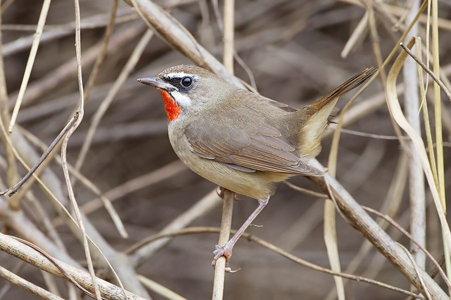

साइबेरियन रूबीथ्रोटSiberian Rubythroat
Luscinia calliope · Muscicapidae · BRD-0339

- Scientific name वैज्ञानिक नाम
- Luscinia calliope (Pallas, 1776)
- Family कुल
- Muscicapidae
- Hindi हिंदी
- साइबेरियन रूबीथ्रोट
- Local names स्थानीय नाम
- siberian rubythroat, common rubythroat
- Status here यहाँ की स्थिति
- native
- Movement आवागमन
- Winter visitor
- Known from कहाँ दर्ज
- Others have published records from the Basti–Ayodhya districts बस्ती–अयोध्या के ज़िलों से दूसरों के प्रकाशित अभिलेख
- IUCN IUCN
- LC
- Review समीक्षा
- not yet reviewed
When to look कब देखें
Winter visitor शीतकालीन प्रवासी. Expected mainly in January, February, March, April, November, December. मुख्यतः जनवरी, फ़रवरी, मार्च, अप्रैल, नवंबर, दिसंबर में अपेक्षित।
Spends the winter in northern India (Baker 1924, p. 91); published records from Uttar Pradesh occur from November to April. All migrants and visitors →
Tell it apart from इनसे अलग पहचानें
साइबेरियन रूबीथ्रोट / Siberian Rubythroat
Luscinia calliope (Pallas, 1776) — Muscicapidae
साइबेरियन रूबीथ्रोट — साइबेरिया और सुदूर उत्तरी एशिया के जंगलों से हजारों किलोमीटर की दूरी तय करके सर्दियों में उत्तर प्रदेश के मैदानों में आने वाला एक अत्यंत सुंदर प्रवासी पक्षी है। वयस्क नर के गले पर गहरे माणिक्य (रूबी) जैसा चमकता हुआ लाल धब्बा होता है जो पतली काली रेखा से घिरा रहता है। इसके चेहरे पर आंखों के ऊपर और गालों के नीचे साफ सफेद धारियां बनी होती हैं। इसका पूरा शरीर जैतून-भूरे रंग का होता है और इसकी पूंछ बिना किसी सफेद धब्बे के एकरंग भूरी होती है। यह दलदलों, नरकुलों और गन्ने के खेतों की निचली डालियों में छिपकर कीड़े खाता है।
Quick Identification त्वरित पहचान
| Feature | Description | |
|---|---|---|
| Habit | Ground-feeding winter chat of wooded or scrub country near water | |
| Size | Compact chat roughly the size of a [[bluethroat\ | Bluethroat]] |
| Throat | Brilliant ruby-scarlet throat bordered by a crisp narrow black line | |
| Face | Distinctive double white stripe: a white supercilium and a bold white submoustachial stripe | |
| Upperparts | Uniform earthy olive-brown above, lacking streaking on mantle or back | |
| Tail | Plain, uniform brown tail lacking white or rufous patches | |
| Underparts | Brownish-grey breast shading to buff-grey flanks and whitish lower belly |
Field tip: Look in scrub and grass near water. When foraging on the ground, it regularly jerks its semi-spread plain brown tail up over its back.
हिंदी:
यह नीलकंठी के आकार का पक्षी है जिसके गले पर लाल रूबी जैसा चमकदार धब्बा होता है।
इसकी आंखों के ऊपर और गालों पर सफेद धारियां होती हैं और शरीर ऊपर से भूरा होता है।
इसकी पूंछ पूरी भूरी होती है और यह जमीन पर चलते समय पूंछ को ऊपर उठाकर हिलाता है।
Morphology आकारिकी
Measurements as given by Baker (1924):
| Measurement | Range |
|---|---|
| Wing | wing 70 to 83 mm. (Baker 1924 as Calliope calliope) |
The Siberian Rubythroat is an exquisitely marked passerine displaying marked sexual dimorphism. In adult males, the upperparts from crown to upper tail-coverts are uniform warm olive-brown, the head feathers faintly edged paler. The wings and tail are dark brown, margined with rufous-olive.
A prominent white supercilium runs from the forehead over the eye, and a broad white moustachial streak extends along the cheek. The lores and area immediately below the eye are deep velvety black. The chin and throat are brilliant glowing ruby-scarlet, narrowly bordered on each side and below by a crisp black margin. The breast is brownish-grey, shading to buff-grey on the flanks and creamy-white on the belly.
Adult females lack the scarlet and black throat, having a whitish chin and throat buff-washed across the breast, while retaining pale superciliary markings. The bill is dark brown with a pale fleshy gape. The irises are dark hazel-brown. The legs and long tarsi are pale plumbeous-brown.
Vocalisations. A sweet but rather monotonous little song delivered from the upper twigs of some low bush (Baker 1924, p. 92).
हिंदी:
इसके पंखों की लंबाई 70 से 83 मिमी होती है (बेकर 1924)।
नर के गले पर चमकीला लाल धब्बा होता है और आंखों के पास सफेद लकीरें होती हैं।
यह झाड़ियों की ऊपरी टहनियों पर बैठकर एक मधुर लेकिन थोड़ा एकरस गीत गाता है (बेकर 1924)।
Behaviour & Ecology व्यवहार और पारिस्थितिकी
Luscinia calliope is found in wooded or scrub-jungle localities, especially such as are near water (Baker 1924, p. 92). It feeds on insects on the ground and among grass, reeds, and low bushes.
When foraging, it frequently jerks its tail up over its back semi-expanded (Baker 1924, p. 92).
हिंदी:
यह पक्षी पानी के पास झाड़ियों और वनों वाले इलाकों में रहना पसंद करता है (बेकर 1924)।
यह जमीन पर और निचली घास-फूस में कीड़े तलाशता है।
यह जमीन पर चलते समय अपनी पूंछ को थोड़ा खोलकर पीठ के ऊपर उठाता है (बेकर 1924)।
Life Cycle / Phenology जीवन चक्र
The Siberian Rubythroat spends the winter in northern India, south to Bombay, Raipur, and Orissa (Baker 1924, p. 91). Published records from Uttar Pradesh occur from November to April. It does not breed anywhere in India.
Its breeding range lies across northern Asia, where it builds a domed nest of grass placed on the ground under shelter of a bush or grass tussock (Baker 1924, pp. 91–92). A small clutch of eggs is laid before migrating south for the winter.
हिंदी:
यह सर्दियों में पूरे उत्तर भारत में प्रवास करता है (बेकर 1924)।
यह भारत में प्रजनन नहीं करता; गर्मियों में यह उत्तरी एशिया लौट जाता है।
वहां यह झाड़ी या घास के झुरमुट की आड़ में जमीन पर घास का गुंबदनुमा घोंसला बनाता है (बेकर 1924)।
Host Plants or Prey आहार
The Siberian Rubythroat feeds on insects on the ground and among low vegetation (Baker 1924, p. 92):
- Insects found on the ground in wooded and scrub localities (Baker 1924, p. 92)
- Invertebrates gleaned among grass, reeds, and low bushes near water (Baker 1924, p. 92)
हिंदी:
इसका मुख्य आहार जमीन पर और पानी के पास मिलने वाले कीड़े-मकोड़े हैं (बेकर 1924)।
Predators / Natural Enemies शत्रु
Raptors and small carnivores take birds of this size. No source opened for this atlas names a specific predator of this bird.
हिंदी:
छोटे शिकारी पक्षी और नेवले जैसे जानवर झाड़ियों में छिपकर इसका शिकार करते हैं। इस एटलस के लिए खोले गए किसी स्रोत में इसके किसी विशिष्ट शिकारी का नाम नहीं है।
Agricultural / Human Relevance कृषि प्रासंगिकता
The Siberian Rubythroat winters in wooded and scrub-jungle localities near water (Baker 1924, p. 92). It is protected under the Wildlife (Protection) Act, 1972.
हिंदी:
यह पानी के पास झाड़ियों और खुले जंगलों में शीतकालीन प्रवास करता है (बेकर 1924)। यह वन्यजीव (संरक्षण) अधिनियम, 1972 के तहत संरक्षित है।
Expected Locally स्थानीय रूप से अपेक्षित
Not a field record. Written from published accounts for eastern Uttar Pradesh. No confirmed local sighting yet — if you have seen it, that is what the atlas needs.
अभी तक स्थानीय पुष्टि नहीं। यह विवरण प्रकाशित स्रोतों से है, किसी अवलोकन से नहीं।
Search scrub and grass near water around Lucknow and in the Terai between November and April.
GBIF holds published records from these districts, with a single eBird list from Faizabad (Ayodhya) and multiple records from Lucknow; it is not yet known to be regular in Basti–Ayodhya.
A first record would be a photograph of the bird with place and date, sent through the About page.
Distribution वितरण
Global range: Breeds across the northern Palearctic from the Ural Mountains through Siberia to Kamchatka and Japan; winters across South and Southeast Asia.
In India: Distributed throughout Northern India, South to Bombay, Raipur, and Orissa in winter (Baker 1924, p. 91).
In Uttar Pradesh: Documented by winter records in Lucknow, Balrampur, and a single observation from Faizabad.
In Basti district / eastern UP: Documented by a single published record from Faizabad district; regular in Lucknow and the northern plains during winter.
हिंदी:
यह रूस के साइबेरिया से लेकर भारत, म्यांमार और थाईलैंड के मैदानी भागों तक फैला हुआ है।
उत्तर प्रदेश में इसके रिकॉर्ड लखनऊ, बलरामपुर और फैजाबाद (अयोध्या) से प्रकाशित हैं।
Research Questions शोध प्रश्न
- What is the comparative abundance of Siberian Rubythroats versus Bluethroats in Awadh floodplain sugarcane fields? / अवध के गन्ने के खेतों में नीलकंठी (ब्लूथ्रोट) की तुलना में साइबेरियन रूबीथ्रोट की संख्या कितनी रहती है?
- How does the clearing of riparian wetland reedbeds affect winter territory retention in northern Uttar Pradesh? / नदियों के किनारे नरकुल की कटाई से इस प्रवासी पक्षी के शीतकालीन इलाके पर क्या असर पड़ता है?
- What is the arrival date range in November across the central and eastern Uttar Pradesh plains?
- Do wintering individuals show territory fidelity to the exact ditch or crop margin across multiple years?
- Can school nature clubs map winter arrivals by checking calling chats along village canal banks? (A student can record arrival dates and sketch throat patterns from canal pathways.)
Similar Species मिलती-जुलती प्रजातियाँ
| Species | How to tell apart | हिंदी | |
|---|---|---|---|
| [[white_tailed_rubythroat\ | White-tailed Rubythroat]] (Luscinia pectoralis) | Tail has broad pure white base and white tips on outer feathers; upperparts slaty-grey; broad black breast band | व्हाइट-टेल्ड रूबीथ्रोट |
| [[bluethroat\ | Bluethroat]] (Luscinia svecica) | Bright orange-rufous basal patches on tail feathers; male has vivid blue and rufous breast gorget; bold white supercilium | हुसैनी पिद्दा |
Field rule: The brilliant ruby-scarlet throat, double white facial stripes (eyebrow and cheek), uniform olive-brown upperparts, and plain brown unpatterned tail distinguish the male Siberian Rubythroat.
हिंदी:
व्हाइट-टेल्ड रूबीथ्रोट की पूंछ के किनारे सफेद होते हैं और हुसैनी पिद्दे की पूंछ पर नारंगी रंग होता है; साइबेरियन रूबीथ्रोट की पूंछ पूरी भूरी होती है।
Taxonomy & Classification वर्गीकरण
Original description. Described by Peter Simon Pallas in 1776 in Reise durch verschiedene Provinzen des Russischen Reichs (vol. 3, p. 697), under the basionym Motacilla calliope. The type locality is the Yenisei River, Siberia.
Synonyms and historical names. Stuart Baker (1924, p. 91) treated the species under Calliope calliope, noting the vernacular names "Gunpicjora (Beng.) and Ganyula (Nep.)". Modern authorities place it in Luscinia or retain Calliope. The IUCN Red List catalogs it under Calliope calliope.
Subspecies. Treated as monotypic by Baker (1924, p. 91).
Family and order placement. Order Passeriformes (songbirds); family Muscicapidae (Old World flycatchers and chats); genus Luscinia.
IUCN status rationale. Evaluated as Least Concern (LC) by the IUCN Red List (as Calliope calliope) due to its immense breeding range across northern Asia and vast global population.
हिंदी:
पीटर साइमन पलास ने 1776 में साइबेरिया से इसका वर्णन किया था। यह मस्किसापिडी कुल का सदस्य है और संकटमुक्त (LC) है।
Photo Gallery फोटो गैलरी
No photos yet — add field photos to media/species/siberian_rubythroat/ and run node scripts/sync_photos.js.
Photos needed आवश्यक फोटो
- [ ] Adult male showing ruby throat and white facial stripes (माणिक्य जैसा लाल गला और सफेद चेहरे की धारियां)
- [ ] Foraging individual hopping on ground near reed stems (नरकुल के पास जमीन पर फुदकता पक्षी)
References संदर्भ
- Pallas, P. S. (1776). Reise durch verschiedene Provinzen des Russischen Reichs. Vol. 3. Kayserliche Academie der Wissenschaften, St. Petersburg, p. 697 (as Motacilla calliope).
- Baker, E. C. S. (1924). The Fauna of British India, Including Ceylon and Burma. Birds. Vol. 2. Taylor & Francis, London, p. 91 (as Calliope calliope).
- Ali, S. & Ripley, S. D. (1987). Compact Handbook of the Birds of India and Pakistan. Oxford University Press, New Delhi.
- Grimmett, R., Inskipp, C. & Inskipp, T. (2011). Birds of the Indian Subcontinent. 2nd ed. Christopher Helm, London.
- BirdLife International (2016). Calliope calliope. The IUCN Red List of Threatened Species 2016: e.T22709701A87886433. doi:10.2305/iucn.uk.2016-3.rlts.t22709701a87886433.en
- GBIF Occurrence Data — Luscinia calliope, India (2025).
Source file: species/fauna/birds/siberian_rubythroat.md